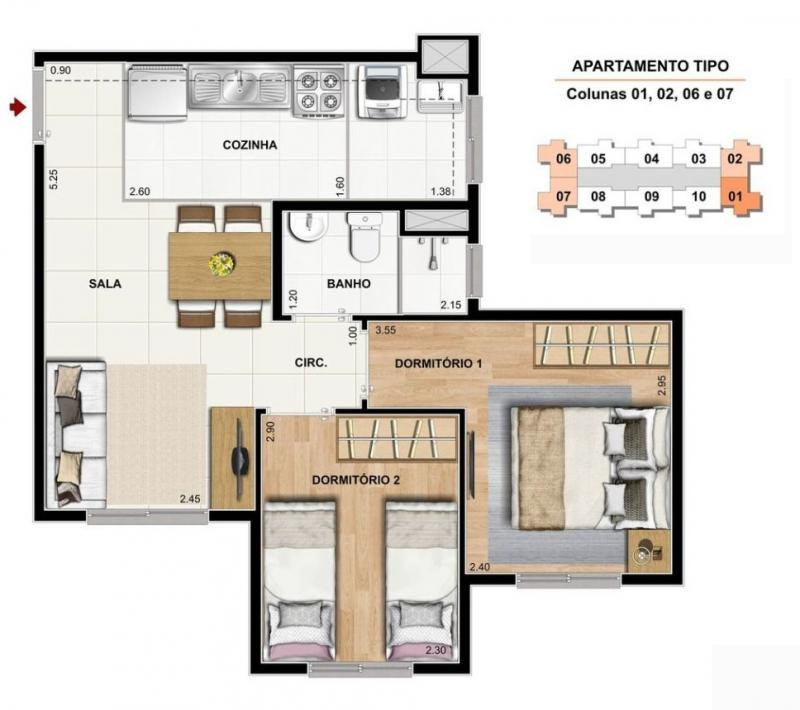
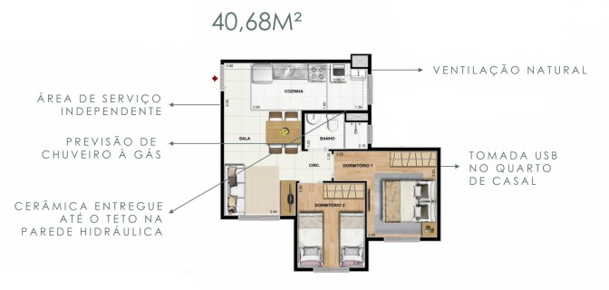
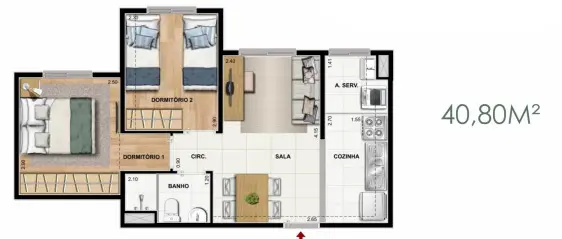

Pesquisa de 23/10/2026. Referência do usuário: Guedala Park III / Premium, torre 02, final 06, 8º andar, 40,18 m². Somente pesquisa e documentação; nenhum arquivo CAD ou decisão de projeto alterado.
O resultado indexado da página Cury Dez João Dias, em domínio da construtora, associa esse título ao Condomínio Residencial Dez Vila das Belezas 3, CCISA45 e matrícula 449.297. A página completa retornou HTTP 403: a evidência disponível é o trecho indexado, não a conferência integral da página.
O aditamento de debêntures da Cury de 26/09/2022, anexo na página 16, também identifica Vila das Belezas 3 pela matrícula 449.297. É um documento societário, sem plantas do interior. Ele registra nº 274 para as três fases; cadastros imobiliários atuais apontam nº 200 para a fase 3. Essa diferença de endereço não foi resolvida documentalmente.
Imobz e QuintoAndar ajudam a localizar a fase 3, mas não demonstram a tipologia de cada unidade. O vínculo de nomes acima aumenta a relevância das plantas João Dias já arquivadas; não autentica automaticamente toda imagem de corretor como projeto executivo da fase 3.
A imagem abaixo, arquivada no projeto desde a pesquisa de setembro, vem do acervo JM Marques — Cury Dez João Dias. Destaca colunas 01, 02, 06 e 07. Girar a planta 180° aproxima sua orientação da planta do Guedala; isso não comprova o espelhamento de cada unidade filmada. A própria galeria antiga contém referências de fase que exigem cautela.

Fonte local preservada: fontes/dez_joao_jm_2.jpg. A imagem não informa área total. Dimensões lidas das cotas impressas, não estimadas por pixels.
| Ambiente | Seu Guedala — planta oficial | Planta comercial comparada | Consequência |
|---|---|---|---|
| Quarto principal | 2,45 × 2,95 m | 2,40 × 2,95 m | 5 cm a menos na largura da referência |
| Quarto 2 / escritório | 2,30 × 2,95 m | 2,30 × 2,90 m | 5 cm a menos no comprimento da referência |
| Banheiro | 2,09 × 1,24 m | 2,15 × 1,20 m | Referência 6 cm mais longa e 4 cm mais estreita |
| Largura da sala | 2,45 m | 2,45 m | Mesma cota nominal; não confirma corredor livre com móveis |
Todas são cotas de projeto. A comparação não transfere medidas de portas, janelas, tanque, box ou móveis. As cotas longitudinais de 5,15 m no Guedala e 5,25 m no desenho comparado atravessam setores: não devem ser interpretadas como comprimento útil de uma bancada.
O ImovelApp conserva duas alternativas: a imagem de 40,68 m² de canto tem organização semelhante; a de 40,80 m² de meio tem outra distribuição e não deve ser usada como equivalente. O endereço e o status de lançamento nessa página são inconsistentes/desatualizados; a área de 40,68 m² não é atribuída automaticamente à imagem cotada da JM.


| Assunto | Contribuição da referência | Limite / fonte que prevalece |
|---|---|---|
| Cozinha e lavanderia | Reconhecer cozinha transversal, tanque e janela na extremidade, relação com sala | Não confirma comprimento livre, posição de registros, gás, tomadas ou tamanho dos volumes técnicos |
| Banheiro | Reconhecer janela lateral, box e relação com a circulação | Não resolve altura de forro, tubulações ou a solução de água quente até o gabinete |
| Entrega e revestimentos | Material comercial cita laminado, previsão de chuveiro a gás, USB e cerâmica na parede hidráulica | Essas promessas não se transferem ao Guedala; vale o memorial específico já recebido |
| Móveis e circulação | Fotos e vídeos dessa família ajudam a visualizar proporções e conflitos | Não validam mesa Berlin, três cadeiras, distância ao sofá ou fabricação de marcenaria |
| Estrutura e instalações | Indícios visuais de volumes junto a áreas molhadas | Não permitem identificar sua função, demolição possível, trajeto interno ou dimensões |
Para o Guedala, continuam prioritários Planta_oficial.pdf, memorial oficial de 03/04/2023 e análise local do memorial. O memorial já esclarece parte dos acabamentos e infraestrutura de chuveiro a gás; não é necessário solicitá-lo novamente. Para ar-condicionado, consultar os registros posteriores da convenção e decisões vigentes, sem importar restrições de outro condomínio.
Não localizados publicamente para a fase 3: manual técnico da unidade, cortes com alturas, plantas elétrica/hidráulica/gás, detalhamento de shafts e versão conforme executada. Mesmo se surgirem, serão referências comparativas; o fechamento técnico exige documentação da torre/final do Guedala e vistoria real.
Documentos que mais completariam o seu projeto: cortes com altura sob laje/forro/sanca; planta de instalações da torre 02/final 06; dimensões e função dos enchimentos; posições e alturas dos pontos; vãos e peitoris de janelas. Na vistoria, conferir essas informações e medir os espaços acabados antes de encomendar móveis.
O vídeo Tudo da Mona — entrega do Vila das Belezas 3, de 20/01/2023, já está na pesquisa de unidades entregues: referência parcial do interior aproximadamente entre 10 e 14 minutos. Foram examinados metadados e quadros públicos, não o áudio ou vídeo integral. Torre, final e metragem não foram confirmados. A data de entrega 06/2024 anunciada pelo Apto para João Dias conflita com esse registro; não foi adotada como data comprovada.
Fontes e ressalvas adicionais estão em Indice_fontes.csv. Imagens locais já existentes foram reexaminadas e permanecem intactas. Nenhuma revisão de CAD foi criada.